For the PlayStation Vita
VitaXMB
The PSP's cross media bar, rebuilt for the Vita. Your games, homebrew, music, video and settings, in the layout, motion and sound of the original.
Free and open source. Needs a Vita with HENkaku / Enso.
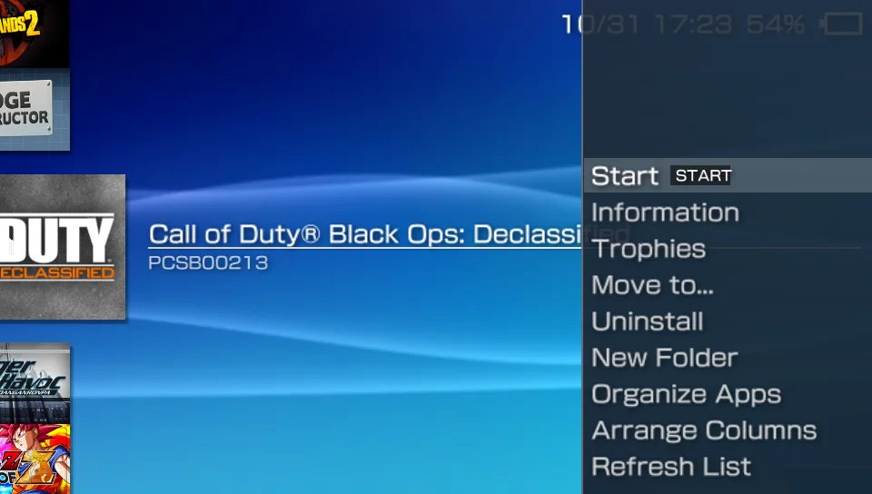
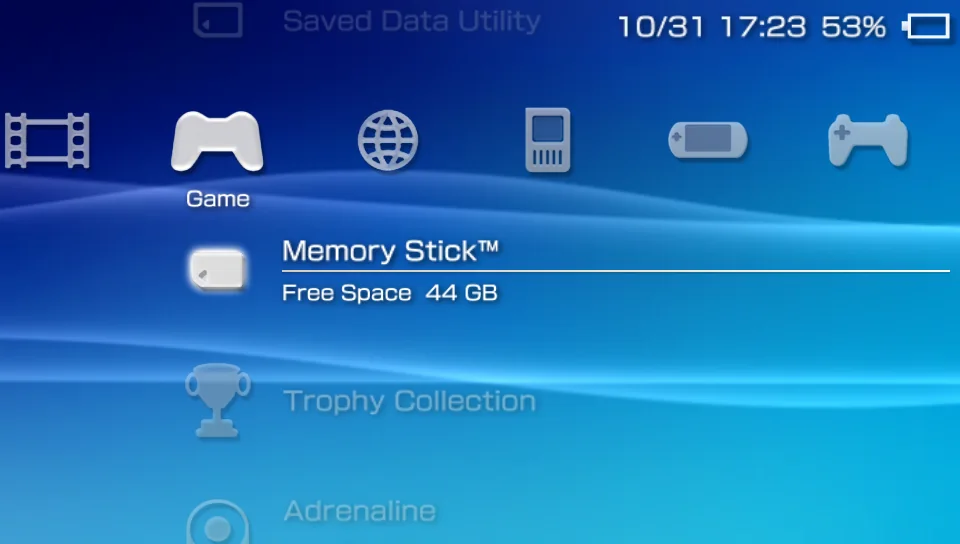
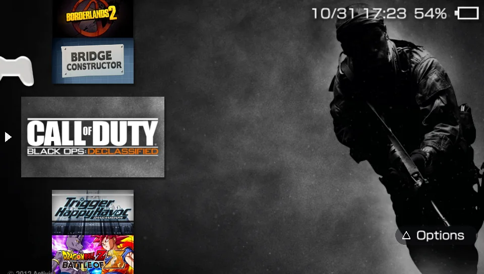
What it is
VitaXMB gives your Vita the PSP's home screen. The same icons, spacing, waves and sounds, with your Vita games, homebrew, PSP and PS1 games, music and video where the PSP would put them.
Games
Your whole library in the PSP's game list
Every Vita title and homebrew bubble with its own artwork, plus PSP and PS1 games from Adrenaline's folders, listed under their real names. Rest on a PSP game and its ICON1 video and sound play, like on the PSP.
- Wide tiles, with the game's background art when you rest on it
- PSP and PS1 ISO, CSO and EBOOT files, with or without an Adrenaline bubble
- A Last played disc under Memory Stick, as in a PSP's drive
Options
Triangle opens Options, like it should
Start, Information, Move to..., Uninstall and folders sit one button away on every game and every column row. Sort a whole library into columns and folders of your own, with a matching icon for every system.
- Up to 22 columns of your own, and folders inside them
- Uninstall an app from its Options, with a question first
- Trophy progress without opening the LiveArea
Music and video
A player with the PSP's spectrum analyzer
The PSP's music screens, drawn at the Vita's resolution and driven by the real audio. A video player (beta) with the PSP's control panel plays much more than the PSP could.
- MP3, FLAC, WAV, AIFF and Ogg Vorbis, streamed from the card
- MP4, MKV, AVI, WebM and more, hardware decoded where the Vita allows
- Full touch screen support in every list and player
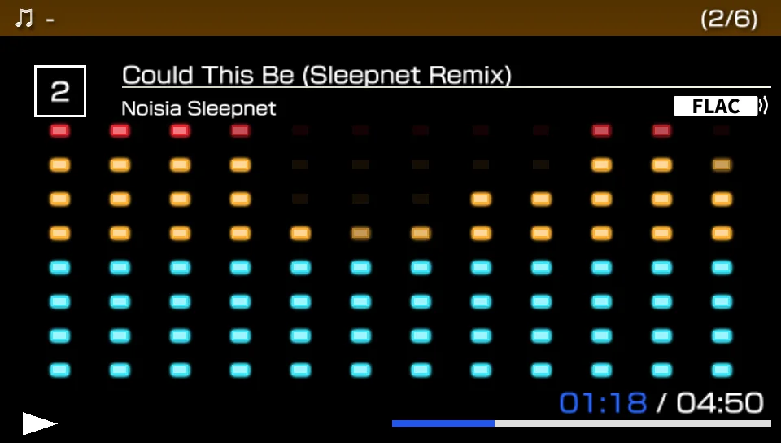
Settings
The PSP's Settings, with the Vita's options added
The PSP's two-level Settings layout, in the PSP's own 12 languages. Switch the monthly colour theme, load PSP custom themes (beta), and update VitaXMB from inside the app, like the PSP's System Update.
- Network Update checks GitHub, shows the notes and installs the new version
- Twelve monthly colours with the PSP's animated waves
- PSP .ctf and .ptf themes from a folder on the card
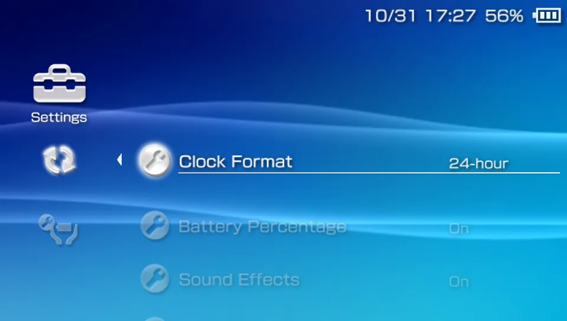
Sort
Sort the whole library from one list
Nothing is deleted. Apps you placed yourself and retail Vita games never move.
- Open the sort listSettings > VitaXMB Settings > Sort Apps into Columns. It is also offered once at the first start.
- Tick what you wantCross ticks a row, Square ticks all or none, L and R jump five rows.
- Pick the targetsEmulators, Utilities, Music, Video and Network go to their columns. PSP games, PS1 games, PSM games and Homebrew get columns of their own.
- Choose the retro layoutA folder per system inside Emulators (the default), a column per system, or one Retro column.
- Press TriangleFix anything with Move to..., Organize Apps or Arrange Columns.
Every column and folder the list makes gets the icon of its system. You can change any of them later from Arrange Columns or a folder's Options.
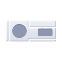
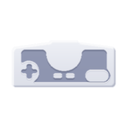
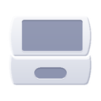
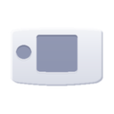
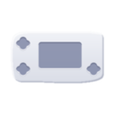
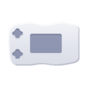
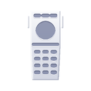
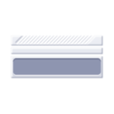
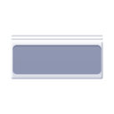
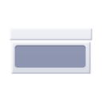
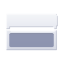
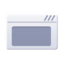
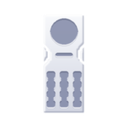
Retro games
Start your ROMs from the XMB
Having RetroArch or Emu4Vita+ installed is not enough on its own. VitaXMB never searches the whole card: it reads two places.
1. RetroArch playlists
Scan your ROMs once in RetroArch (Import Content > Scan Directory). RetroArch writes ux0:data/retroarch/playlists/<system>.lpl and VitaXMB reads it. The ROMs can be anywhere. A fresh RetroArch has empty playlists.
2. RetroFlow-style folders
Put ROMs in a folder named after the system. One level of subfolders is read. RetroFlow Launcher itself is not needed. Titles come from the file names, so name ROMs the No-Intro way. Pictures are PNG files with the same name, from RetroArch's thumbnails or RetroFlow's covers.
Choose the emulator in Settings > VitaXMB Settings > Retro Games Launcher. The README lists all 31 folder names and the cores.
ux0:data/RetroFlow/ ├─ ROMS/ │ ├─ Nintendo - Super Nintendo Entertainment System/ │ │ └─ Super Mario World (USA).sfc │ ├─ Nintendo - Game Boy Advance/ │ │ └─ Metroid Fusion (USA).gba │ └─ Sega - Mega Drive - Genesis/ └─ COVERS/ # optional PNG pictures └─ Nintendo - Super Nintendo Entertainment System/ └─ Super Mario World (USA).png
Screens
Captured on the Vita
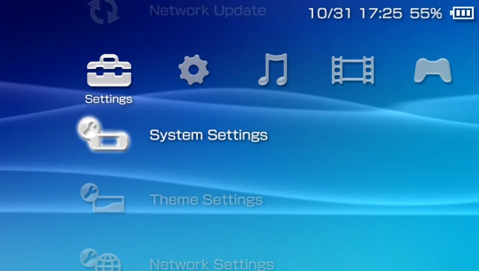
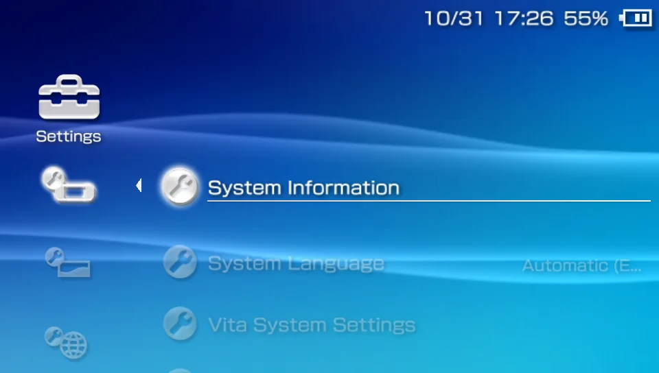
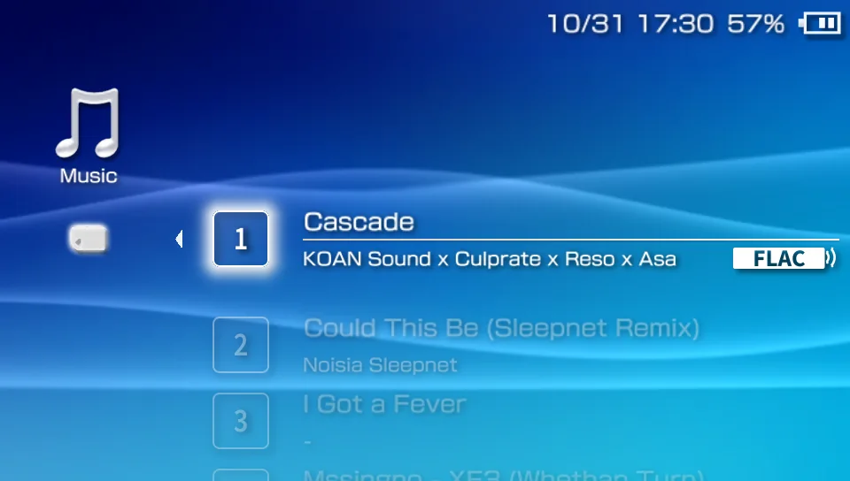
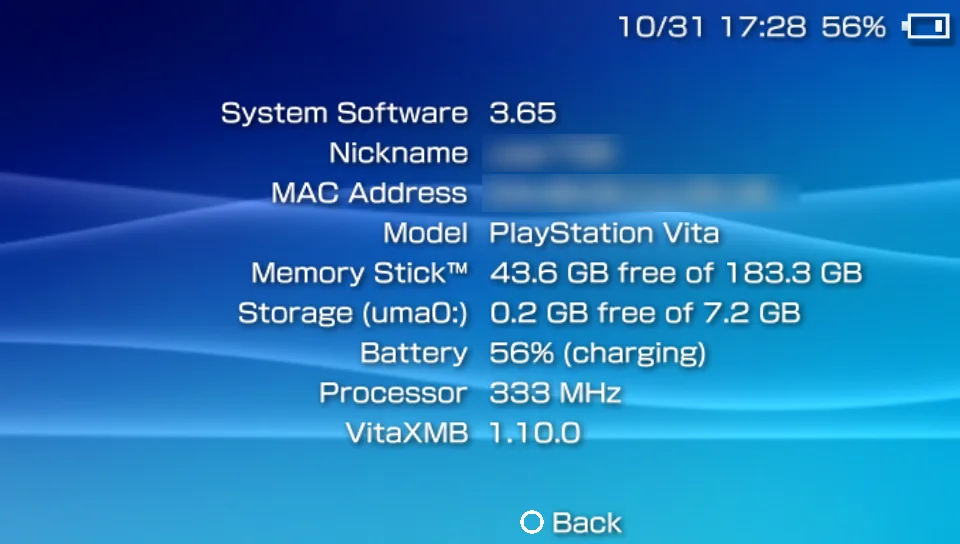
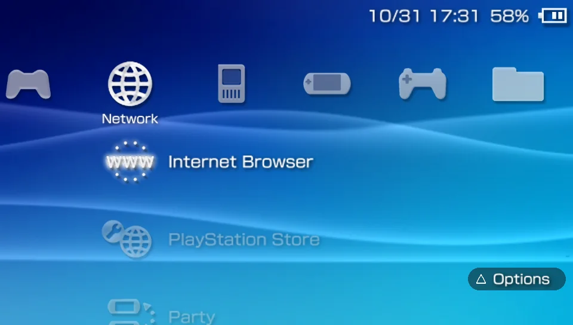
Install
Three steps, then the PSP's menu
VitaXMB is an unsafe homebrew: it reads other apps' folders and starts other titles. Your Vita needs HENkaku / Enso with Enable Unsafe Homebrew switched on.
Before you install
Always
A Vita with HENkaku or Enso, with Enable Unsafe Homebrew on. VitaXMB is built and tested on firmware 3.65. VitaShell, or any way to install a .vpk.
For PSP and PS1 games
Adrenaline with your games in ux0:pspemu (ISO, CSO, PSN or converted PS1 EBOOTs). VitaXMB lists them, shows their text blocks and starts them for you.
For retro games
RetroArch or Emu4Vita+, and ROMs in RetroFlow-style folders or a RetroArch playlist. Nothing to convert if you already use RetroFlow Launcher.
Steps
Install with VitaShell
Copy the file to the Vita, press Cross on it and confirm.
Start VitaXMB
Open it from the LiveArea. Settings are kept in ux0:data/VitaXMB, with a log.txt for problems.
Start it when the Vita turns on
Install AutoBoot and NoLockScreen with AutoPlugin 2, then pick VitaXMB under Extras > AutoBoot > Select App. By hand, ux0:data/AutoBoot/boot.cfg must contain only the title ID. VitaXMB also offers its own NoLiveArea plugin at the first start, which keeps the LiveArea out of sight and brings VitaXMB back when a game closes.
Controls
- Left Right
- Change category. In Settings: back, and change the value.
- Up Down
- Move through the list. Hold to repeat.
- L R
- Jump five rows.
- Cross
- Open, start, change a value.
- Circle
- Back, close a page or dialog.
- Triangle
- Options on a game, folder, saved data or any column row.
Touch works everywhere: drag to scroll, tap a row to select and again to open, press and hold for Options.
Questions
Before you ask
My apps are all in Memory Stick
Run Settings > VitaXMB Settings > Sort Apps into Columns, or use Triangle > Move to... on an app. With a custom theme that has no panels for the extra columns, each column shows as a folder under Memory Stick.
A retro game only opens the emulator
Games start through RetroArch or Emu4Vita+ with the core and the file as launch parameters. Older builds may not take them. RetroFlow recommends RetroArch 1.9.4 and Emu4Vita+ 0.71 or newer. Tell us which version you use in the Discord.
The screen stays black after starting a game
That is the NoLiveArea plugin hiding the LiveArea while the game loads. If it never ends, press the PS button or restart the Vita.
How do I start over with columns and folders?
Delete folders.txt and columns.txt in ux0:data/VitaXMB.
Which custom themes work?
PSP themes are a beta. Themes that paint the whole category bar, such as the Xbox 360 and Euphoria styles, have no picture for extra columns, so those columns appear as folders under Game > Memory Stick.
The video player is a beta, the PlayStation Network and Extras categories of the real PSP are not implemented, and PSM games have not been tried on a console with PSM titles. The README has the full list.
Questions, bugs, ideas
Ask for help, report a bug or suggest a feature in the Discord. No GitHub account needed.